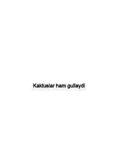

KHHayotdagi tikanlarga qaramay, har kim gullab-yashnashi mumkin.
Bu kitob turk yozuvchisi Songul Unsal qalamiga mansub bo'lib, o'zbek tiliga Ulug'bek Jangchiddinov va Raolat Ibragimova tomonidan tarjima qilingan. Kitob hayotdagi qiyinchiliklarga qaramay, inson o'z yo'lida gullab-yashnashi mumkinligini ilhomlantiruvchi tarzda bayon etadi. 'Zukko Kitobxon' nashriyoti tomonidan Toshkentda 2022-yilda chop etilgan.